| 日付 | 2015年5月2日（土） - 2015年5月4日（月） | ||
|---|---|---|---|
| 山域 | 飛騨の山 | ||
| メンバー | 家族（妻、長女・4歳、長男・1歳） | ||
| 山行形態 | 子連れ2泊3日ホテル泊 | ||
| アクセス | 車 | ||
| ルート (Map) |
|
今年のGWはどこに行こうかと色々な山を検討し、岐阜県にある位山に目を付ける。
歩行時間が手頃で、残雪も少なそうで、GWの家族連れでも登れそうだ。
今回の旅行は位山が位置する高山を中心に計画を立てることにする。
当初は5/3～5/5の予定を立てていたが、4,5日の天気予報が今一だったため
急遽5/2～5/4に日程を変更し、高山に向かう。
1日目
飛騨山脈を安房トンネルで超えて西に進む。
上高地行のバス停の駐車場にはすごい数の車が停まっていた。上高地は長い間ご無沙汰だ。
車道は高原川の清流に沿って続いている。
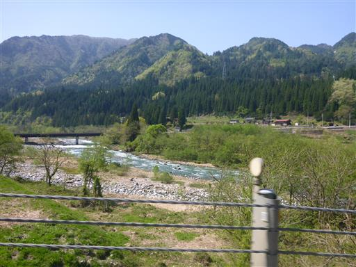
まずは池ヶ原湿原を訪れる。比較的小さな駐車場に車を停める。
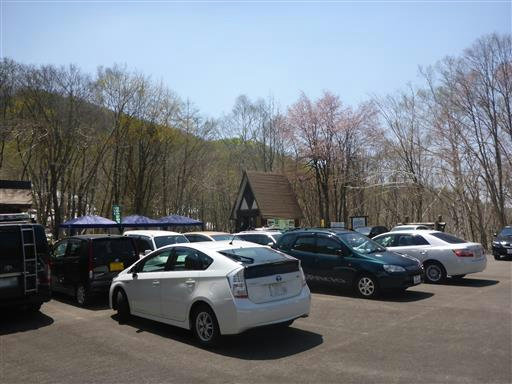
池ヶ原湿原の大きな標識が立っている。
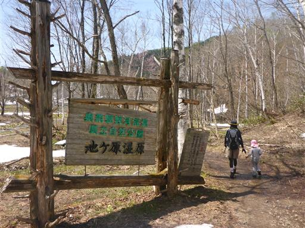
まずは水芭蕉の花がお出迎え。ここの湿原はGWがちょうど水芭蕉の咲く季節だ。
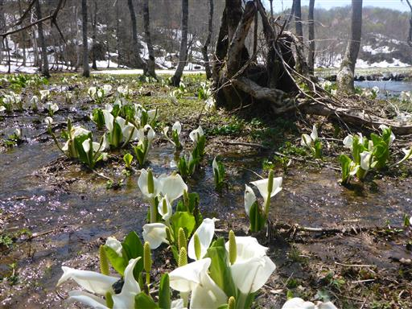
湿原の中を1本の木道が伸びている。
地元の人がのんびり散策する場所のようで、観光客の数はそれほど多くない。
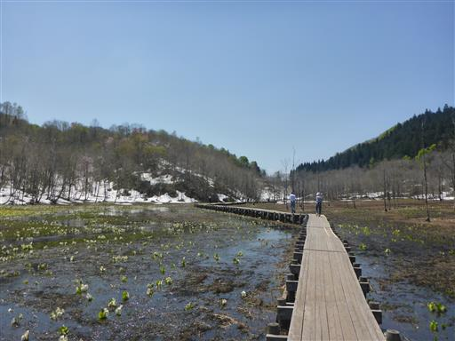
黄色い花はリュウキンカ。一面を鮮やかな黄色に染めている。
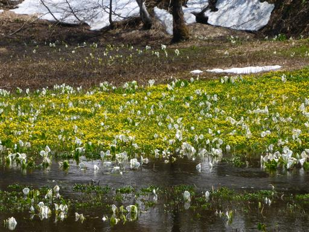
湿原内ではあちらこちらで雪解け水が流れている。その脇に花々が咲いている。
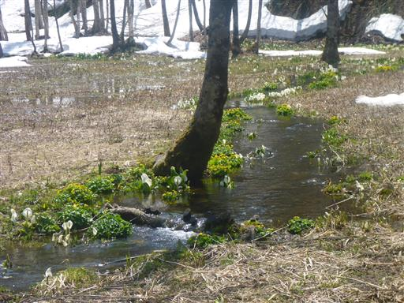
中には完全に水没している水芭蕉もある。
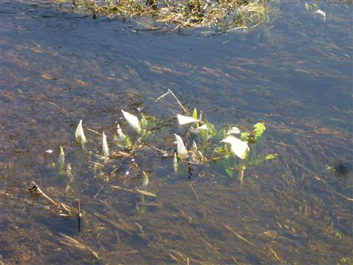
奥の方に行くと残雪が豊富に残っている。雪がまだらに残る景色もまた美しい。
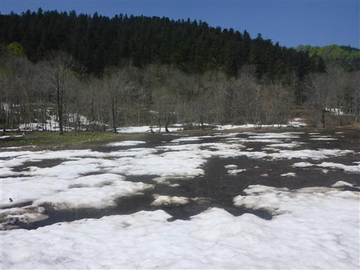
木道の端の方は除雪されておらず、雪道になっている。
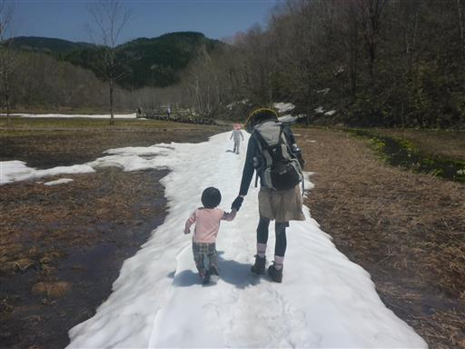
木道終端点で腰を下ろして、景色を見ながら昼食をとる。
駐車場から木道終端まで、ゆっくり歩いても20分ほどで、思ったよりもこじんまりとした湿原だ。
尾瀬に比べるとはるかに小さく、湿原を取り囲む山々も小さい。
しかし、ここは人の訪れが少なく、ゆったりと時間が流れているように感じる。
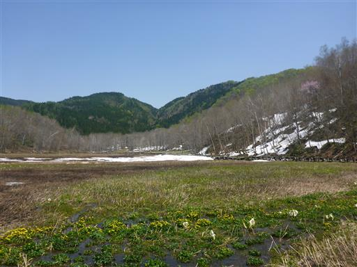
足元に咲く水芭蕉とリュウキンカの花をアップで撮る。
リュウキンカの花を見るのは初めてだ。
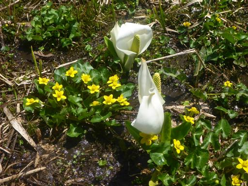
ザゼンソウも顔を出している。
あまり美しい花ではないが比較的珍しい植物で、この花も初めて見た。
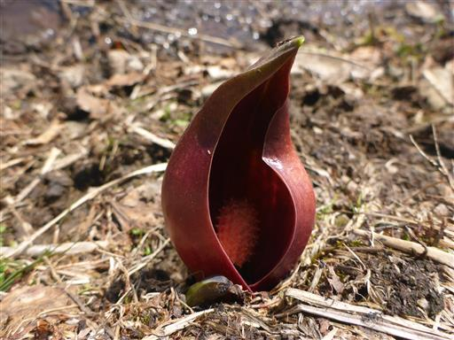
周囲の山も淡い新緑に包まれていて春らしい景色だ。
池ヶ原湿原は静かで美しい、良い場所だった。
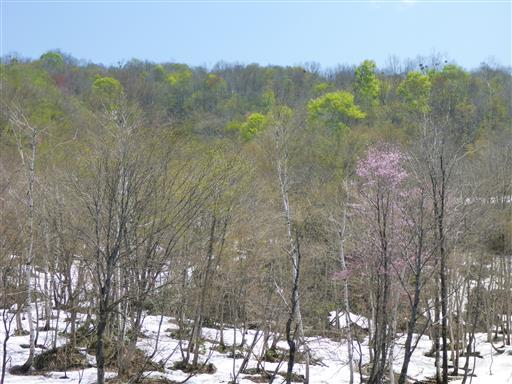
池ヶ原湿原の散策の後、時間が余ったので宇津江四十八滝を訪れる。
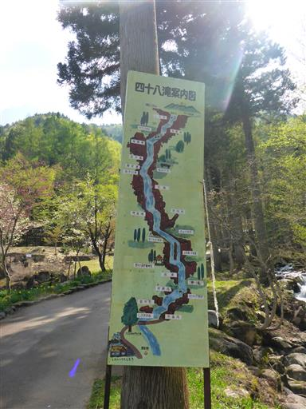
ねじ栗。樹齢1300年の栗の木の一部が残されている。
ここまで大きな栗の木は珍しいらしく、一部が保存されている。
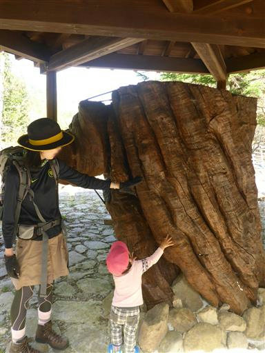
清掃協力金として200円/人を支払う。
自販機で券を購入するが特に人がいる訳ではなく、支払いは良心に任されているようだ。
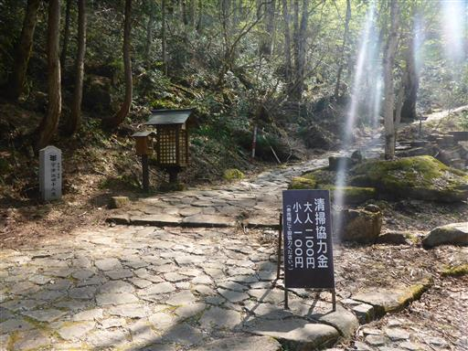
さっそく渓谷沿いの道が始まる。
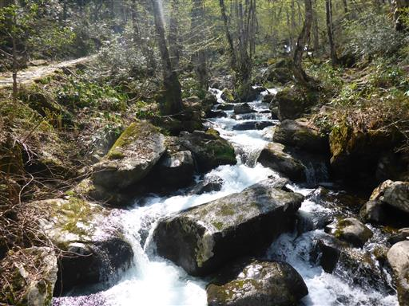
遊歩道は観光客向けに完全に整備されている。
美しい渓谷を眺められるよう、何度も橋を渡るようになっている。
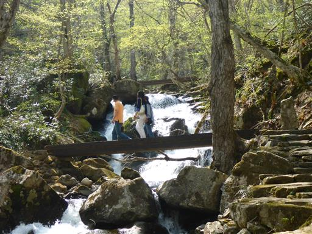
朝霧滝。美しい流れだ。
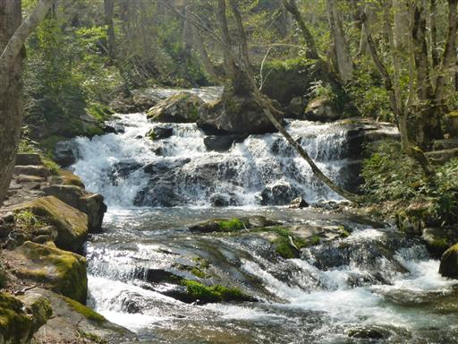
今日も息子は元気に歩いている。
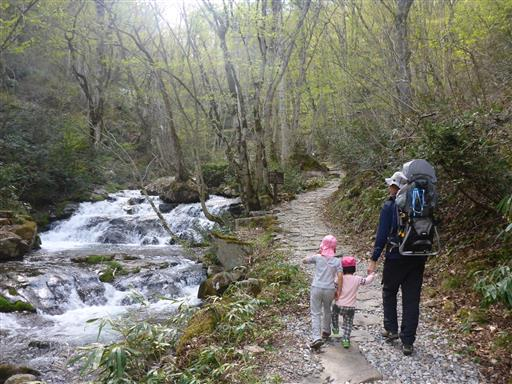
ケヤキの大木。不思議な形の木だ。
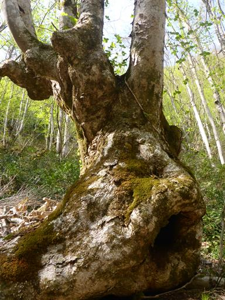
3段の滝が連なっている。
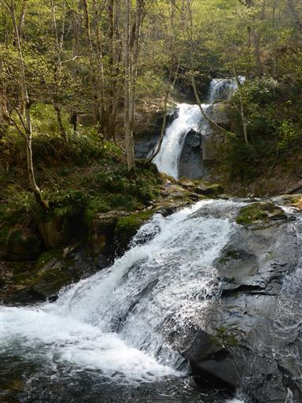
一番上の上段滝。奥に不動明王が祀られている。
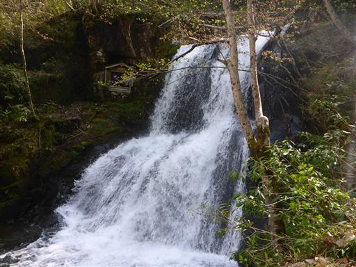
滝が連続するだけあって、それなりの登り道だ。
息子は途中でギブアップ、キャリアに乗せてあげる。

梵音滝。水しぶきが美しい。
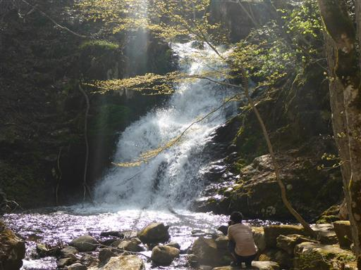
王滝。落差19mで宇津江四十八滝で最大の滝だ。
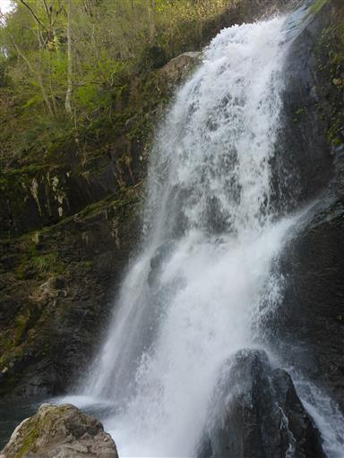
崖下が見えて怖い階段を登って行く。
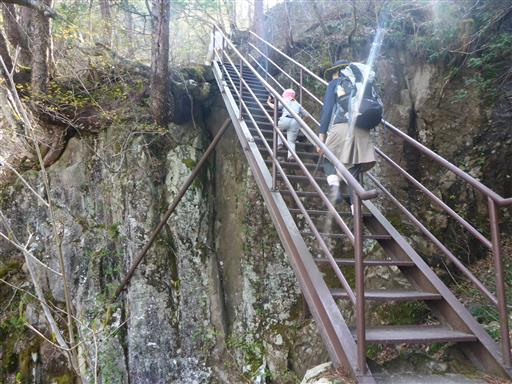
障泥滝。水が岩壁に激突している。
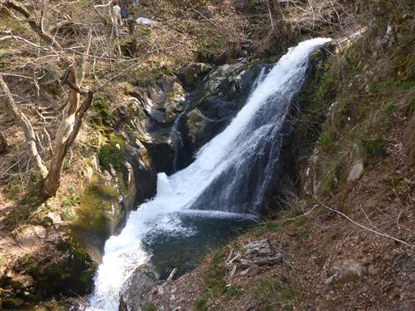
展望台に到着する。標識が置かれている木は面白い形をしている。
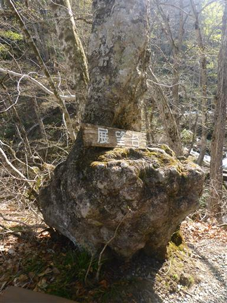
北アルプスの展望が広がる。空気は霞んでいて薄ら見える程度だ。
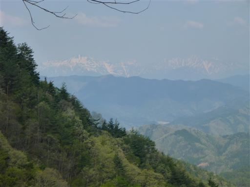
こちらは乗鞍岳。大きな山体だ。
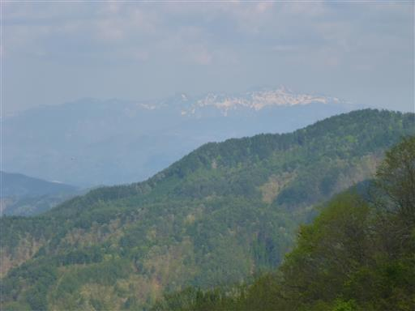
布晒滝。布をさらしているように見えることから名づけられた。
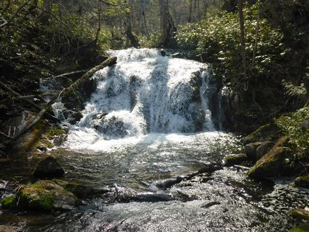
最後の方は少しだけ残雪が残っている。
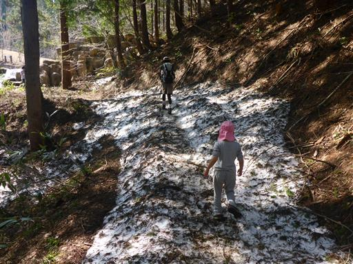
遊歩道終点に到着。最上部は公園風に整備されている。
美しい渓谷の上部が人工物だと少しがっかりだ。
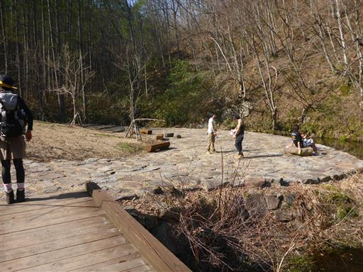
小さな池がある。渓谷の水はここから流れている。
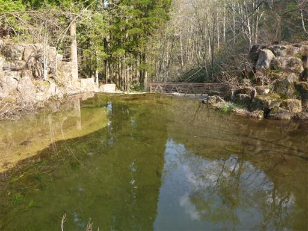
駐車場まで下って行く。
所々、登りと下りで道が分けられているため、登りとは異なる風景が見られる。
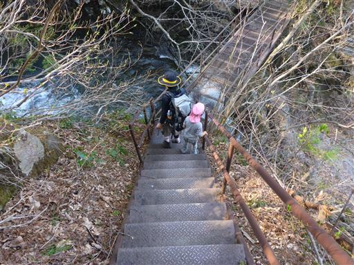
足元にショウジョウバカマの花が咲いている。

立派な桂の木。変わった形をしているが、人の手が入った結果だろうか？
この辺り一帯はあちらこちらで大木が見られる。
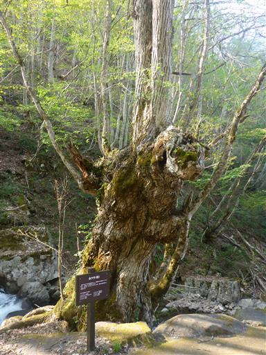
レストハウスでソフトクリームを食べる。売店の外には水車が並んでいる。
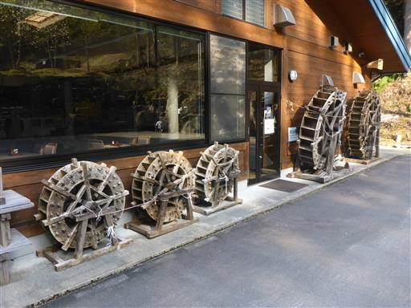
夕日が差してきて、新緑が美しく輝いている。
宇津江四十八滝は1時間半程度の手頃なコースで、
際立った景観はなかったが、全体的に美しい渓谷だった。
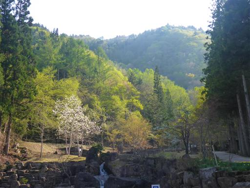
本日の宿は高山市の中心地にある喜十郎屋。
直前の予約であり、どのような宿かの情報があまりなかったため、宿泊するまではかなり不安だったが、
古い建物ながら良く手入れされており、食事も満足できるもので、良い宿だった。
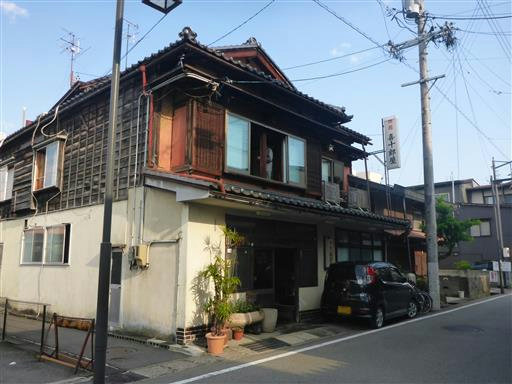
夕食後は少し高山の町を歩く。酒屋で地酒を買って宿に戻る。
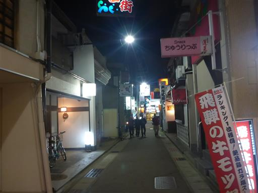